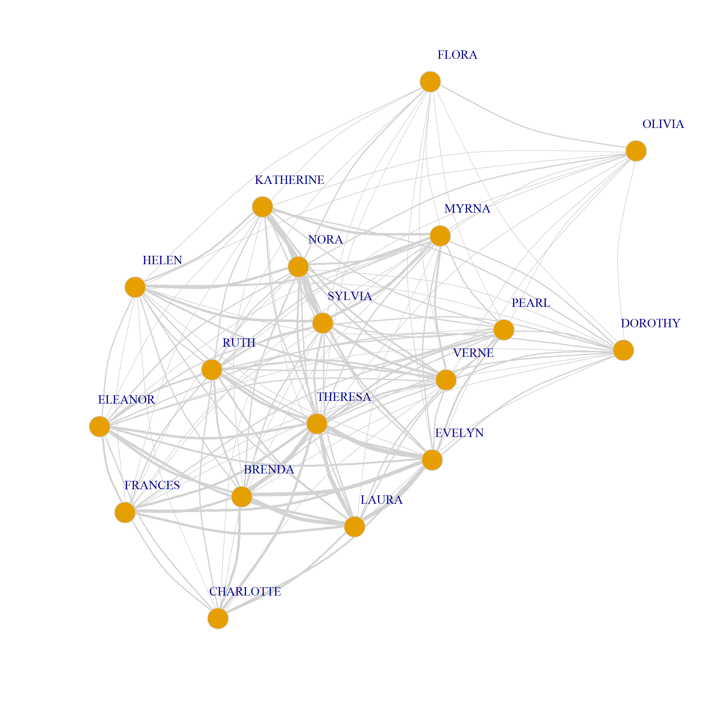
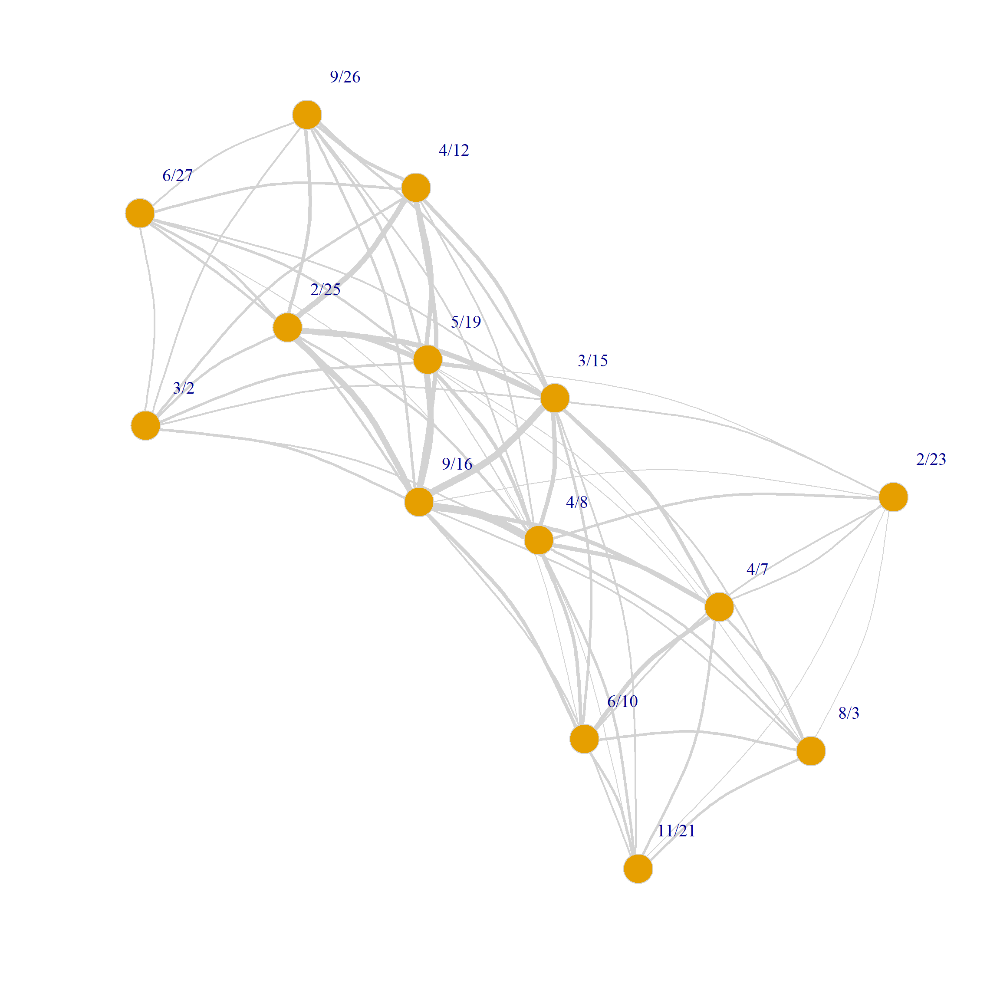
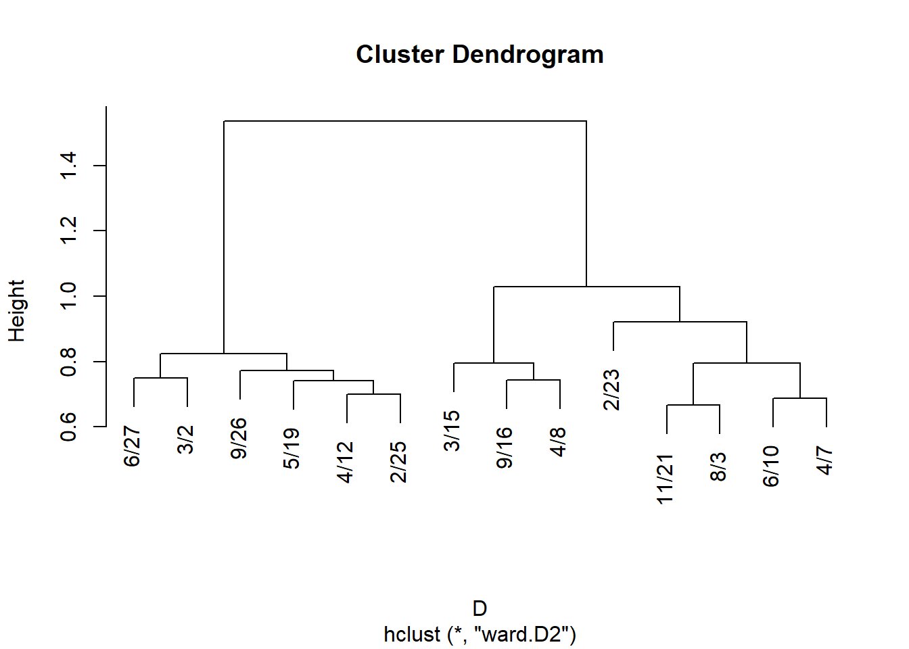
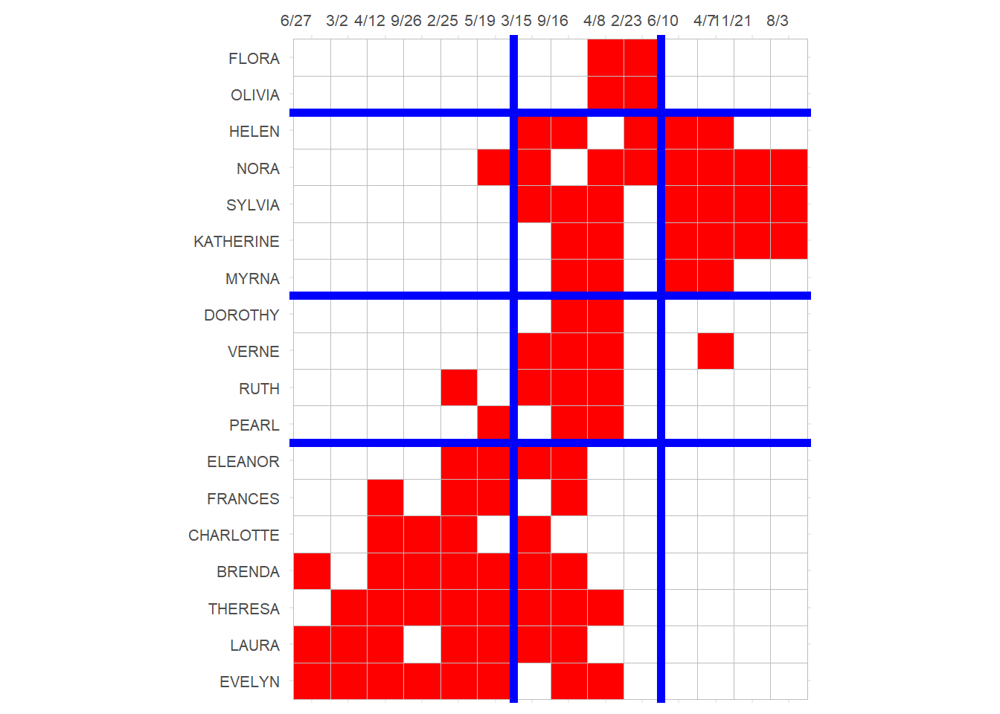

Analyzing Two-Mode Networks
Two-Mode Networks
This lecture deals with the network analysis of two-mode networks. Note that in the literature there is some terminological slippage. Two-mode networks are a type of social network. By definition two-mode networks can be represented using rectangular adjacency matrices (sometimes called affiliation matrices in sociology).
In this case, two-mode networks fall under the general category of “two-mode data.” Any data set that has information on two types of objects (e.g., people and variables) is two-mode data so two-mode networks are just a special case of two-mode data.
In this sense, there is a useful a distinction, due to Borgatti and Everett (1997). This is that between the “modes” and the “ways” of a data matrix. So most data matrices are two-ways, in that they have at least two dimensions (e.g., the row and column dimensions).
But some data matrices (like the usual adjacency matrix in regular network data) only collect information on a single type of entity, so they are “one mode, two ways.” But sometimes we have network data on two sets of objects, in which case, we use a data matrix that has “two-modes” (sets of nodes) and “two ways” (rows and columns).
So what makes a network a “two-mode network”? Well, a two-mode network is different from a regular network, because it has two sets of nodes not just one. So instead of \(V\) now we have \(V_1\) and \(V_2\). Moreover, the edges in a two-mode network only go from nodes in one set to nodes in the other set; there are no within-node-set edges.
Bipartite Graphs
This restriction makes the graph that represents a two-mode network a special kind of graph called a bipartite graph. A graph is bipartite if the set of nodes in the graph can be divided into two groups, such that relations go from nodes in one set to nodes in the other set.
Note that bipartite graphs can be be used to represent both two-mode and regular one mode networks, as long as the above condition holds. For instance, a dating network with 100% heterosexual people will yield a bipartite graph based on the dating relation, with men in one set and women on the other node set, even though it’s a one-mode network.
So whether or not a graph is bipartite is something you can check for.
Let’s see how that works. Let us load the most famous two-mode network data set (kind of the Drosophila of two-mode network analysis; one of the most repeatedly analyzed social structures in history: For a classic sampling of such analyses see here) a network composed of eighteen women from the social elite of a tiny town in the south in the 1930s who attended fourteen social events (Breiger 1974), otherwise know as the Southern Women (SW) data:
Now we already know this is a bipartite graph. However, let’s say you are new and you’ve never heard of these data. You can check whether the graph you loaded up is bipartite or not by using the igraph function is_bipartite:
Which returns TRUE as an answer. Had we loaded up any old non-bipartite graph, the answer would have been:
Which makes sense because that’s just a regular old graph.
Note that if we check the bipartite graph object, it looks like any other igraph object:
IGRAPH 1074643 UN-B 32 89 --
+ attr: type (v/l), name (v/c)
+ edges from 1074643 (vertex names):
[1] EVELYN --6/27 EVELYN --3/2 EVELYN --4/12 EVELYN --9/26
[5] EVELYN --2/25 EVELYN --5/19 EVELYN --9/16 EVELYN --4/8
[9] LAURA --6/27 LAURA --3/2 LAURA --4/12 LAURA --2/25
[13] LAURA --5/19 LAURA --3/15 LAURA --9/16 THERESA --3/2
[17] THERESA --4/12 THERESA --9/26 THERESA --2/25 THERESA --5/19
[21] THERESA --3/15 THERESA --9/16 THERESA --4/8 BRENDA --6/27
[25] BRENDA --4/12 BRENDA --9/26 BRENDA --2/25 BRENDA --5/19
[29] BRENDA --3/15 BRENDA --9/16 CHARLOTTE--4/12 CHARLOTTE--9/26
+ ... omitted several edgesBut we can tell that the graph is a two-mode network because we have links starting with people with old southern lady names from the 1930s (which are also the names of a bunch of young girls in middle school today) and ending with events that have dates in them. So the (undirected) edge is \(person-event\).
The graph is undirected because the “membership” or “attendance” relation between a person and an organization/event doesn’t have a natural directionality:
Another way of checking the “bipartiteness” of a graph in igraph is by using the bipartite_mapping function.
Let’s see what it does:
$res
[1] TRUE
$type
EVELYN LAURA THERESA BRENDA CHARLOTTE FRANCES ELEANOR PEARL
FALSE FALSE FALSE FALSE FALSE FALSE FALSE FALSE
RUTH VERNE MYRNA KATHERINE SYLVIA NORA HELEN DOROTHY
FALSE FALSE FALSE FALSE FALSE FALSE FALSE FALSE
OLIVIA FLORA 6/27 3/2 4/12 9/26 2/25 5/19
FALSE FALSE TRUE TRUE TRUE TRUE TRUE TRUE
3/15 9/16 4/8 6/10 2/23 4/7 11/21 8/3
TRUE TRUE TRUE TRUE TRUE TRUE TRUE TRUE This function takes the candidate bipartite graph as input and returns two objects: res is just a check to see if the graph is actually bipartite (TRUE in this case), type is a logical vector of dimensions \(M + N\) (where \(M\) is the number of nodes in the person set and \(N\) is the number of nodes in the event set) dividing the nodes into two groups. Here people get FALSE and events get TRUE, but this designations are arbitrary (a kind of dummy coding; FALSE = 0 and TRUE = 1).
We can add this as a node attribute to our graph so that way we know which node is in which set:
The Biadjacency (Affiliation) Matrix
Once you have your bipartite graph loaded up, you may want (if the graph is small enough) to check out the graph’s affiliation matrix \(A\).
This works just like before, except that now we use the as_biadjacency_matrix function:
6/27 3/2 4/12 9/26 2/25 5/19 3/15 9/16 4/8 6/10 2/23 4/7 11/21 8/3
EVELYN 1 1 1 1 1 1 0 1 1 0 0 0 0 0
LAURA 1 1 1 0 1 1 1 1 0 0 0 0 0 0
THERESA 0 1 1 1 1 1 1 1 1 0 0 0 0 0
BRENDA 1 0 1 1 1 1 1 1 0 0 0 0 0 0
CHARLOTTE 0 0 1 1 1 0 1 0 0 0 0 0 0 0
FRANCES 0 0 1 0 1 1 0 1 0 0 0 0 0 0
ELEANOR 0 0 0 0 1 1 1 1 0 0 0 0 0 0
PEARL 0 0 0 0 0 1 0 1 1 0 0 0 0 0
RUTH 0 0 0 0 1 0 1 1 1 0 0 0 0 0
VERNE 0 0 0 0 0 0 1 1 1 0 0 1 0 0
MYRNA 0 0 0 0 0 0 0 1 1 1 0 1 0 0
KATHERINE 0 0 0 0 0 0 0 1 1 1 0 1 1 1
SYLVIA 0 0 0 0 0 0 1 1 1 1 0 1 1 1
NORA 0 0 0 0 0 1 1 0 1 1 1 1 1 1
HELEN 0 0 0 0 0 0 1 1 0 1 1 1 0 0
DOROTHY 0 0 0 0 0 0 0 1 1 0 0 0 0 0
OLIVIA 0 0 0 0 0 0 0 0 1 0 1 0 0 0
FLORA 0 0 0 0 0 0 0 0 1 0 1 0 0 0In this matrix we list one set of nodes in the rows and the other set is in the columns. Each cell \(a_{ij} = 1\) if row node \(i\) is affiliated with column node \(j\), otherwise \(a_{ij} = 0\).
The Bipartite Adjacency Matrix
Note that if we were to use the regular as_adjacency_matrix function on a bipartite graph, we get a curious version of the adjacency matrix:
EVELYN LAURA THERESA BRENDA CHARLOTTE FRANCES ELEANOR PEARL RUTH
EVELYN 0 0 0 0 0 0 0 0 0
LAURA 0 0 0 0 0 0 0 0 0
THERESA 0 0 0 0 0 0 0 0 0
BRENDA 0 0 0 0 0 0 0 0 0
CHARLOTTE 0 0 0 0 0 0 0 0 0
FRANCES 0 0 0 0 0 0 0 0 0
ELEANOR 0 0 0 0 0 0 0 0 0
PEARL 0 0 0 0 0 0 0 0 0
RUTH 0 0 0 0 0 0 0 0 0
VERNE 0 0 0 0 0 0 0 0 0
MYRNA 0 0 0 0 0 0 0 0 0
KATHERINE 0 0 0 0 0 0 0 0 0
SYLVIA 0 0 0 0 0 0 0 0 0
NORA 0 0 0 0 0 0 0 0 0
HELEN 0 0 0 0 0 0 0 0 0
DOROTHY 0 0 0 0 0 0 0 0 0
OLIVIA 0 0 0 0 0 0 0 0 0
FLORA 0 0 0 0 0 0 0 0 0
6/27 1 1 0 1 0 0 0 0 0
3/2 1 1 1 0 0 0 0 0 0
4/12 1 1 1 1 1 1 0 0 0
9/26 1 0 1 1 1 0 0 0 0
2/25 1 1 1 1 1 1 1 0 1
5/19 1 1 1 1 0 1 1 1 0
3/15 0 1 1 1 1 0 1 0 1
9/16 1 1 1 1 0 1 1 1 1
4/8 1 0 1 0 0 0 0 1 1
6/10 0 0 0 0 0 0 0 0 0
2/23 0 0 0 0 0 0 0 0 0
4/7 0 0 0 0 0 0 0 0 0
11/21 0 0 0 0 0 0 0 0 0
8/3 0 0 0 0 0 0 0 0 0
VERNE MYRNA KATHERINE SYLVIA NORA HELEN DOROTHY OLIVIA FLORA 6/27 3/2
EVELYN 0 0 0 0 0 0 0 0 0 1 1
LAURA 0 0 0 0 0 0 0 0 0 1 1
THERESA 0 0 0 0 0 0 0 0 0 0 1
BRENDA 0 0 0 0 0 0 0 0 0 1 0
CHARLOTTE 0 0 0 0 0 0 0 0 0 0 0
FRANCES 0 0 0 0 0 0 0 0 0 0 0
ELEANOR 0 0 0 0 0 0 0 0 0 0 0
PEARL 0 0 0 0 0 0 0 0 0 0 0
RUTH 0 0 0 0 0 0 0 0 0 0 0
VERNE 0 0 0 0 0 0 0 0 0 0 0
MYRNA 0 0 0 0 0 0 0 0 0 0 0
KATHERINE 0 0 0 0 0 0 0 0 0 0 0
SYLVIA 0 0 0 0 0 0 0 0 0 0 0
NORA 0 0 0 0 0 0 0 0 0 0 0
HELEN 0 0 0 0 0 0 0 0 0 0 0
DOROTHY 0 0 0 0 0 0 0 0 0 0 0
OLIVIA 0 0 0 0 0 0 0 0 0 0 0
FLORA 0 0 0 0 0 0 0 0 0 0 0
6/27 0 0 0 0 0 0 0 0 0 0 0
3/2 0 0 0 0 0 0 0 0 0 0 0
4/12 0 0 0 0 0 0 0 0 0 0 0
9/26 0 0 0 0 0 0 0 0 0 0 0
2/25 0 0 0 0 0 0 0 0 0 0 0
5/19 0 0 0 0 1 0 0 0 0 0 0
3/15 1 0 0 1 1 1 0 0 0 0 0
9/16 1 1 1 1 0 1 1 0 0 0 0
4/8 1 1 1 1 1 0 1 1 1 0 0
6/10 0 1 1 1 1 1 0 0 0 0 0
2/23 0 0 0 0 1 1 0 1 1 0 0
4/7 1 1 1 1 1 1 0 0 0 0 0
11/21 0 0 1 1 1 0 0 0 0 0 0
8/3 0 0 1 1 1 0 0 0 0 0 0
4/12 9/26 2/25 5/19 3/15 9/16 4/8 6/10 2/23 4/7 11/21 8/3
EVELYN 1 1 1 1 0 1 1 0 0 0 0 0
LAURA 1 0 1 1 1 1 0 0 0 0 0 0
THERESA 1 1 1 1 1 1 1 0 0 0 0 0
BRENDA 1 1 1 1 1 1 0 0 0 0 0 0
CHARLOTTE 1 1 1 0 1 0 0 0 0 0 0 0
FRANCES 1 0 1 1 0 1 0 0 0 0 0 0
ELEANOR 0 0 1 1 1 1 0 0 0 0 0 0
PEARL 0 0 0 1 0 1 1 0 0 0 0 0
RUTH 0 0 1 0 1 1 1 0 0 0 0 0
VERNE 0 0 0 0 1 1 1 0 0 1 0 0
MYRNA 0 0 0 0 0 1 1 1 0 1 0 0
KATHERINE 0 0 0 0 0 1 1 1 0 1 1 1
SYLVIA 0 0 0 0 1 1 1 1 0 1 1 1
NORA 0 0 0 1 1 0 1 1 1 1 1 1
HELEN 0 0 0 0 1 1 0 1 1 1 0 0
DOROTHY 0 0 0 0 0 1 1 0 0 0 0 0
OLIVIA 0 0 0 0 0 0 1 0 1 0 0 0
FLORA 0 0 0 0 0 0 1 0 1 0 0 0
6/27 0 0 0 0 0 0 0 0 0 0 0 0
3/2 0 0 0 0 0 0 0 0 0 0 0 0
4/12 0 0 0 0 0 0 0 0 0 0 0 0
9/26 0 0 0 0 0 0 0 0 0 0 0 0
2/25 0 0 0 0 0 0 0 0 0 0 0 0
5/19 0 0 0 0 0 0 0 0 0 0 0 0
3/15 0 0 0 0 0 0 0 0 0 0 0 0
9/16 0 0 0 0 0 0 0 0 0 0 0 0
4/8 0 0 0 0 0 0 0 0 0 0 0 0
6/10 0 0 0 0 0 0 0 0 0 0 0 0
2/23 0 0 0 0 0 0 0 0 0 0 0 0
4/7 0 0 0 0 0 0 0 0 0 0 0 0
11/21 0 0 0 0 0 0 0 0 0 0 0 0
8/3 0 0 0 0 0 0 0 0 0 0 0 0This bipartite adjacency matrix \(\mathbf{B}\) is of dimensions \((M + N) \times (M + N)\), which is \((18 + 14) \times (18 + 14) = 32 \times 32\) in the SW data; it has the following block structure (Fouss, Saerens, and Shimbo 2016, 12):
\[ \mathbf{B} = \left[ \begin{matrix} \mathbf{O}_{M \times M} & \mathbf{A}_{M \times N} \\ \mathbf{A}^T_{N \times M} & \mathbf{O}_{N \times N} \end{matrix} \right] \]
Where \(\mathbf{O}\) is just the all zeros matrix of the relevant dimensions, and \(\mathbf{A}\) is the biadjacency (affiliation) matrix as defined earlier. Thus, the bipartite adjacency matrix necessarily has two big diagonal “zero blocks” in it (upper-left and lower-right) corresponding to where the links between nodes in the same set would be (but necessarily aren’t because this is a two-mode network). The non-zero blocks are just the affiliation matrix (upper-right) and its transpose(lower-left).
Bipartiteness as “Anti-Community”
Recall from the community structure lecture notes, that community structure is defined by clusters of nodes that have more connections among themselves than they do with outsiders. If you think about it, a bipartite graph has the opposite of this going on. Nodes of the same type have zero connections among themselves, and they have all their connections with nodes of the other group!
So that means that bipartite structure is the mirror image of community structure (in the two group case). This also means that if we were to compute the modularity of a bipartite graph, using the node type as the grouping variable we should get the theoretical minimum of this measure (which you may recall is \(Q = -\frac{1}{2}\)).
Let’s try it out, by computing the modularity from the bipartite adjacency matrix of the SW data, using node type as the grouping variable:
And indeed, we recover the theoretical minimum value of the modularity (Brandes et al. 2007, 173)! This also means that this method can be used to test whether a graph is bipartite, or whether any network approximates bipartiteness (Newman 2006, 13). Values that are close to \(-0.5\) would indicate that the network in question has bipartite structure.
Basic Two-Mode Network Statistics
We can calculate some basic network statistics from the affiliation (biadjacency) matrix. We have two number of nodes to calculate, but only one quantity for the number of edges.
Number of Nodes and Edges
The number of nodes on the people side \(N\) is just the number of rows of \(A\):
And the number of events/groups \(M\) is just the number of columns:
Finally, the number of edges \(E\) is just the sum of all the entries of \(A\):
Note that if you were to use the igraph function vcount on the original graph object, you get the wrong answer:
That’s because vcount is working with the \(32 \times 32\) regular adjacency matrix, not the biadjacency matrix. Here, vcount is returning the total number of nodes in the graph summing across the two sets, which is \(M + N\).
If you wanted to get the right answer for each set of edges from the regular igraph graph object, you could use the type node attribute we defined earlier along with the subgraph function:
Which gives us the number of women. For the events we do the same thing:
However, because there’s only one set of edges, ecount still gives us the right answer:
Which is the same as:
Density
As we saw in the case of one-mode networks, one of the most basic network statistics that can be derived from the above quantities is the density (observed number of edges divided by maximum possible number of edges in the graph).
In a two-mode network, density is given by:
\[ d = \frac{|E|}{N \times M} \]
Where \(|E|\) is the number of edges in the network. In our case we can compute the density as follows:
Degree-Based Statistics
Because we have two sets of degrees, all the basic degree statistics in the network double up. So we have two mean degrees, two maximum degrees, and two minimum degree to take care of:
So we have:
[1] 4.9[1] 6.4[1] 8[1] 14[1] 2[1] 3However, note that because there’s only one set of undirected edges, the total number of edges incident to each node in each of the two sets is always going to be the same.
That means that there’s only one sum of degrees. So the sum of degrees for people:
Is the same as the sum of degrees of events:
Note that in a bipartite graph, therefore, the sum of degrees of nodes in each node set is equal to the \(|E|\), the number of edges in the graph!
Degree Centrality
In a two-mode network, there are two degree sets, each corresponding to one set of nodes. For the people, in this case, their degree (centrality) is just the number of events they attend, and for the groups, it’s just the number of people that attend each event.
As we have already seen, we can get each from the affiliation matrix. The degree of the people are just the row sums:
EVELYN LAURA THERESA BRENDA CHARLOTTE FRANCES ELEANOR PEARL
8 7 8 7 4 4 4 3
RUTH VERNE MYRNA KATHERINE SYLVIA NORA HELEN DOROTHY
4 4 4 6 7 8 5 2
OLIVIA FLORA
2 2 And the degree of the events are just the column sums:
6/27 3/2 4/12 9/26 2/25 5/19 3/15 9/16 4/8 6/10 2/23 4/7 11/21
3 3 6 4 8 8 10 14 12 5 4 6 3
8/3
3 The igraph function degree will also give us the right answer, but in the form of a single vector including both people and events:
EVELYN LAURA THERESA BRENDA CHARLOTTE FRANCES ELEANOR PEARL
8 7 8 7 4 4 4 3
RUTH VERNE MYRNA KATHERINE SYLVIA NORA HELEN DOROTHY
4 4 4 6 7 8 5 2
OLIVIA FLORA 6/27 3/2 4/12 9/26 2/25 5/19
2 2 3 3 6 4 8 8
3/15 9/16 4/8 6/10 2/23 4/7 11/21 8/3
10 14 12 5 4 6 3 3 As Borgatti and Everett (1997) note, if we want normalized degree centrality measures, we need to divide by either \(M\) (for people) or \(N\) (for events). That is, for people we use the number of events as the norm (as this is the theoretical maximum) and for events the number of people.
So for people, normalized degree is:
EVELYN LAURA THERESA BRENDA CHARLOTTE FRANCES ELEANOR PEARL
0.571 0.500 0.571 0.500 0.286 0.286 0.286 0.214
RUTH VERNE MYRNA KATHERINE SYLVIA NORA HELEN DOROTHY
0.286 0.286 0.286 0.429 0.500 0.571 0.357 0.143
OLIVIA FLORA
0.143 0.143 And for events:
6/27 3/2 4/12 9/26 2/25 5/19 3/15 9/16 4/8 6/10 2/23 4/7 11/21
0.167 0.167 0.333 0.222 0.444 0.444 0.556 0.778 0.667 0.278 0.222 0.333 0.167
8/3
0.167 Or with igraph:
EVELYN LAURA THERESA BRENDA CHARLOTTE FRANCES ELEANOR PEARL
0.571 0.500 0.571 0.500 0.286 0.286 0.286 0.214
RUTH VERNE MYRNA KATHERINE SYLVIA NORA HELEN DOROTHY
0.286 0.286 0.286 0.429 0.500 0.571 0.357 0.143
OLIVIA FLORA 6/27 3/2 4/12 9/26 2/25 5/19
0.143 0.143 0.167 0.167 0.333 0.222 0.444 0.444
3/15 9/16 4/8 6/10 2/23 4/7 11/21 8/3
0.556 0.778 0.667 0.278 0.222 0.333 0.167 0.167 Average Nearest Neighbor Degree
For each person (group) we may also be interested in whether they connect to more or less central groups (persons). As such, we can compute the average nearest neighbor degree for persons and groups.
For people this is equivalent to multiplying the vector of group degrees by the entries of the affiliation matrix, and then dividing by the degrees of each person:
6/27 3/2 4/12 9/26 2/25 5/19 3/15 9/16 4/8 6/10 2/23 4/7 11/21 8/3
EVELYN 3 8 12 3 6 10 0 3 8 0 0 0 0 0
LAURA 3 8 5 0 4 14 6 3 0 0 0 0 0 0
THERESA 0 10 4 3 8 12 3 6 10 0 0 0 0 0
BRENDA 4 0 6 3 8 5 3 4 0 0 0 0 0 0
CHARLOTTE 0 0 3 6 10 0 3 0 0 0 0 0 0 0
FRANCES 0 0 3 0 14 6 0 8 0 0 0 0 0 0
ELEANOR 0 0 0 0 12 3 6 10 0 0 0 0 0 0
PEARL 0 0 0 0 0 3 0 14 6 0 0 0 0 0
RUTH 0 0 0 0 4 0 8 12 3 0 0 0 0 0
VERNE 0 0 0 0 0 0 8 5 3 0 0 6 0 0
MYRNA 0 0 0 0 0 0 0 4 3 8 0 3 0 0
KATHERINE 0 0 0 0 0 0 0 6 3 8 0 3 4 14
SYLVIA 0 0 0 0 0 0 12 3 6 10 0 3 8 12
NORA 0 0 0 0 0 8 5 0 4 14 6 3 8 5
HELEN 0 0 0 0 0 0 4 3 0 12 3 6 0 0
DOROTHY 0 0 0 0 0 0 0 3 8 0 0 0 0 0
OLIVIA 0 0 0 0 0 0 0 0 10 0 3 0 0 0
FLORA 0 0 0 0 0 0 0 0 14 0 3 0 0 0 EVELYN LAURA THERESA BRENDA CHARLOTTE FRANCES ELEANOR PEARL
6.62 6.14 7.00 4.71 5.50 7.75 7.75 7.67
RUTH VERNE MYRNA KATHERINE SYLVIA NORA HELEN DOROTHY
6.75 5.50 4.50 6.33 7.71 6.62 5.60 5.50
OLIVIA FLORA
6.50 8.50 We can see that for Flora, the average number of members of the groups she connects to is very high, while the opposite is the case for Myrna.
We can do the same for groups:
EVELYN LAURA THERESA BRENDA CHARLOTTE FRANCES ELEANOR PEARL RUTH VERNE
6/27 8 5 0 4 0 0 0 0 0 0
3/2 7 2 6 0 0 0 0 0 0 0
4/12 8 2 7 4 4 8 0 0 0 0
9/26 7 0 8 4 4 0 0 0 0 0
2/25 4 8 5 4 4 8 2 0 4 0
5/19 4 7 2 6 0 7 2 8 0 0
3/15 0 8 2 7 4 0 8 0 4 4
9/16 3 7 2 8 0 4 7 2 6 3
4/8 4 0 8 0 0 0 0 2 7 4
6/10 0 0 0 0 0 0 0 0 0 0
2/23 0 0 0 0 0 0 0 0 0 0
4/7 0 0 0 0 0 0 0 0 0 6
11/21 0 0 0 0 0 0 0 0 0 0
8/3 0 0 0 0 0 0 0 0 0 0
MYRNA KATHERINE SYLVIA NORA HELEN DOROTHY OLIVIA FLORA
6/27 0 0 0 0 0 0 0 0
3/2 0 0 0 0 0 0 0 0
4/12 0 0 0 0 0 0 0 0
9/26 0 0 0 0 0 0 0 0
2/25 0 0 0 0 0 0 0 0
5/19 0 0 0 3 0 0 0 0
3/15 0 0 7 4 4 0 0 0
9/16 7 2 8 0 4 7 0 0
4/8 4 8 5 4 0 8 2 7
6/10 4 7 2 6 3 0 0 0
2/23 0 0 0 7 4 0 8 5
4/7 3 7 2 8 4 0 0 0
11/21 0 4 8 5 0 0 0 0
8/3 0 4 7 2 0 0 0 0 6/27 3/2 4/12 9/26 2/25 5/19 3/15 9/16 4/8 6/10 2/23 4/7 11/21
5.67 5.00 5.50 5.75 4.88 4.88 5.20 5.00 5.25 4.40 6.00 5.00 5.67
8/3
4.33 Degree Correlation
Finally, we can also compute the degree correlation between the nodes in each mode. This tell us whether people with more memberships connect to larger (positive correlation) or smaller (negative correlation) groups.
Here’s a function to compute the degree correlation in a two mode network from the biadjacency matrix:
The tm.deg.corr function creates a data frame set with as many rows as there are entries in the biadjacency matrix, and three columns: e recording whether there is a one or a zero for that particular combination of person and group (line 2), rd recording the degree of that person (line 3), and cd recording the degree of that group (line 4). Then in line 5 the function returns the Pearson correlations between the degrees of persons and groups that are connected in the data frame (e.g., e = 1).
We can now apply our function to the SW data:
Which tells us that there is degree anti-correlation in this network: People with more memberships tend to belong to smaller groups, and people with less memberships connect to bigger groups.
Geodesic Distances
Geodesic distances work a bit different in two-mode networks because of the only between-node-sets edges restriction.
For instance, the minimum geodesic distance \(g_{ii'}\) between two people is two (a person cannot be adjacent to another person), but it is one between a person and a group (if the person is a member of the group).
In the same way, a group \(g\) cannot be at geodesic distance less than three from a person \(p*\) who is not a member, because the shortest path is \(g-p-g^*-p^*\).
That is, there has to be some other group \(g^*\) shared between a member \(p\) of the focal group \(g\) and another person \(p^*\) for the shortest path between \(g\) and the non-member \(p^*\) to exist, and that involves three links at minimum: \(g-p\), \(p-g^*\), and \(g^*-p^*\). This means that the links in paths in two-mode networks always alternate between persons and group nodes.
Beyond that geodesic distances work the same way. In igraph when we use the distances function on a bipartite graph, we get:
EVELYN LAURA THERESA BRENDA CHARLOTTE FRANCES ELEANOR PEARL RUTH
EVELYN 0 2 2 2 2 2 2 2 2
LAURA 2 0 2 2 2 2 2 2 2
THERESA 2 2 0 2 2 2 2 2 2
BRENDA 2 2 2 0 2 2 2 2 2
CHARLOTTE 2 2 2 2 0 2 2 4 2
FRANCES 2 2 2 2 2 0 2 2 2
VERNE MYRNA KATHERINE SYLVIA NORA HELEN DOROTHY OLIVIA FLORA 6/27 3/2
EVELYN 2 2 2 2 2 2 2 2 2 1 1
LAURA 2 2 2 2 2 2 2 4 4 1 1
THERESA 2 2 2 2 2 2 2 2 2 3 1
BRENDA 2 2 2 2 2 2 2 4 4 1 3
CHARLOTTE 2 4 4 2 2 2 4 4 4 3 3
FRANCES 2 2 2 2 2 2 2 4 4 3 3
4/12 9/26 2/25 5/19 3/15 9/16 4/8 6/10 2/23 4/7 11/21 8/3
EVELYN 1 1 1 1 3 1 1 3 3 3 3 3
LAURA 1 3 1 1 1 1 3 3 3 3 3 3
THERESA 1 1 1 1 1 1 1 3 3 3 3 3
BRENDA 1 1 1 1 1 1 3 3 3 3 3 3
CHARLOTTE 1 1 1 3 1 3 3 3 3 3 3 3
FRANCES 1 3 1 1 3 1 3 3 3 3 3 3 EVELYN LAURA THERESA BRENDA CHARLOTTE FRANCES ELEANOR PEARL RUTH VERNE
4/8 1 3 1 3 3 3 3 1 1 1
6/10 3 3 3 3 3 3 3 3 3 3
2/23 3 3 3 3 3 3 3 3 3 3
4/7 3 3 3 3 3 3 3 3 3 1
11/21 3 3 3 3 3 3 3 3 3 3
8/3 3 3 3 3 3 3 3 3 3 3
MYRNA KATHERINE SYLVIA NORA HELEN DOROTHY OLIVIA FLORA 6/27 3/2 4/12 9/26
4/8 1 1 1 1 3 1 1 1 2 2 2 2
6/10 1 1 1 1 1 3 3 3 4 4 4 4
2/23 3 3 3 1 1 3 1 1 4 4 4 4
4/7 1 1 1 1 1 3 3 3 4 4 4 4
11/21 3 1 1 1 3 3 3 3 4 4 4 4
8/3 3 1 1 1 3 3 3 3 4 4 4 4
2/25 5/19 3/15 9/16 4/8 6/10 2/23 4/7 11/21 8/3
4/8 2 2 2 2 0 2 2 2 2 2
6/10 4 2 2 2 2 0 2 2 2 2
2/23 4 2 2 2 2 2 0 2 2 2
4/7 4 2 2 2 2 2 2 0 2 2
11/21 4 2 2 2 2 2 2 2 0 2
8/3 4 2 2 2 2 2 2 2 2 0Which is a square matrix of dimensions \((M + N) \times (M + N)\); that’s \((18 + 14) \times (18 + 14) = 32 \times 32\) in our case.
We can check in R:
As we can see in the distance matrix, distances between nodes in the same set are even \(g_{ii'|jj'} = \{2, 4, \ldots\}\) but distances in nodes in different sets are odd \(g_{ij|ji} = \{1, 3, \ldots\}\). Beyond this hiccup, distances can be interpreted in the same way as one-mode networks.
Closeness Centrality in two-mode Networks
This means that (unnormalized) closeness centrality works the same way as it does in regular networks:
EVELYN LAURA THERESA BRENDA CHARLOTTE FRANCES ELEANOR PEARL
0.017 0.015 0.017 0.015 0.013 0.014 0.014 0.014
RUTH VERNE MYRNA KATHERINE SYLVIA NORA HELEN DOROTHY
0.015 0.015 0.014 0.015 0.016 0.017 0.015 0.014
OLIVIA FLORA 6/27 3/2 4/12 9/26 2/25 5/19
0.012 0.012 0.012 0.012 0.013 0.012 0.014 0.016
3/15 9/16 4/8 6/10 2/23 4/7 11/21 8/3
0.017 0.019 0.018 0.013 0.012 0.013 0.012 0.012 Which is just the inverse of the sums of the distances matrix for people and groups counting their geodesic distances to nodes of both sets.
However, as Borgatti and Everett (1997) note, if we want normalized closeness centralities, we can’t use the off-the-shelf normalization for one-mode networks in igraph (\(n-1\)) as it will give us non-sense results because now we have two sets of nodes.
Instead, we need to normalize the closeness score for each node set by its theoretical maximum for each node set.
For people, this is:
\[ N + 2(M - 1) \]
And for groups/events this same quantity is:
\[ M + 2(N - 1) \]
The basic idea is that nodes can be at minimum geodesic distance \(g = 1\) from nodes of the other set (for people, groups; for groups, people) and at minimum distance \(g = 2\) from nodes of their own set, with their own presence eliminated by subtraction (Borgatti and Everett 1997).
In our case, we create a normalization vector with these quantities of length \(M + N\):
And normalized closeness is:
EVELYN LAURA THERESA BRENDA CHARLOTTE FRANCES ELEANOR PEARL
0.800 0.727 0.800 0.727 0.600 0.667 0.667 0.667
RUTH VERNE MYRNA KATHERINE SYLVIA NORA HELEN DOROTHY
0.706 0.706 0.686 0.727 0.774 0.800 0.727 0.649
OLIVIA FLORA 6/27 3/2 4/12 9/26 2/25 5/19
0.585 0.585 0.524 0.524 0.564 0.537 0.595 0.688
3/15 9/16 4/8 6/10 2/23 4/7 11/21 8/3
0.733 0.846 0.786 0.550 0.537 0.564 0.524 0.524 Which are the same numbers in Borgatti and Everett (1997, table 1, column 6).
Betweenness Centrality in two-mode Networks
As Borgatti and Everett (1997) also note, the normalizations for betweenness centrality in the two-mode case are a bit more involved. This is because they depend on which node set is larger than the other.
For the larger node set, which in our case is the people, the normalization is:
\[ 2(M-1)(N-1) \]
For the smaller node set, which in our case is the groups/events, the normalization is:
\[ \frac{1}{2}(N)(N-1)+\frac{1}{2}(M-1)(M-2)+(M-1)(N-1) \]
Remember that you have to switch this around if you are analyzing a network with more groups than people.
Creating the relevant vectors:
And normalized betweenness is:
EVELYN LAURA THERESA BRENDA CHARLOTTE FRANCES ELEANOR PEARL
9.72 5.17 8.82 4.98 1.07 1.08 0.95 0.68
RUTH VERNE MYRNA KATHERINE SYLVIA NORA HELEN DOROTHY
1.69 1.58 1.65 4.77 7.22 11.42 4.27 0.20
OLIVIA FLORA 6/27 3/2 4/12 9/26 2/25 5/19
0.51 0.51 0.22 0.21 1.84 0.78 3.80 6.56
3/15 9/16 4/8 6/10 2/23 4/7 11/21 8/3
13.07 24.60 22.75 1.15 1.98 1.83 0.23 0.23 Which are (with some slight differences and rounding errors) the same numbers in Borgatti and Everett (1997, table 2, column 3).
The Duality of Persons and Groups
Remember that in the one-mode case, multiplying the adjacency matrix times its transpose yields the common neighbors matrix \(\mathbf{M}\):
\[ \mathbf{M} = \mathbf{A}\mathbf{A}^T \]
As famously noted by Breiger (1974), doing the same for the affiliation matrix of a two-mode network also returns the common-neighbors matrix, but because objects in one mode can only connect to objects in another mode, this also reveals the duality of persons and groups: The connections between people are made up of the groups they share, and the connections between groups are revealed by the groups they share.
Thus, computing the common neighbors matrix for both persons and groups (also called the projection of the two-mode network into each of its modes) produces a one-mode similarity matrix between people and groups, where the similarities are defined by the number of objects in the other mode that they share.
So for the people the relevant projection is:
\[ \mathbf{P} = \mathbf{A}\mathbf{A}^T \]
And for the groups:
\[ \mathbf{G} = \mathbf{A}^T\mathbf{A} \]
Which in our case yields:
EVELYN LAURA THERESA BRENDA CHARLOTTE FRANCES ELEANOR PEARL RUTH
EVELYN 8 6 7 6 3 4 3 3 3
LAURA 6 7 6 6 3 4 4 2 3
THERESA 7 6 8 6 4 4 4 3 4
BRENDA 6 6 6 7 4 4 4 2 3
CHARLOTTE 3 3 4 4 4 2 2 0 2
FRANCES 4 4 4 4 2 4 3 2 2
ELEANOR 3 4 4 4 2 3 4 2 3
PEARL 3 2 3 2 0 2 2 3 2
RUTH 3 3 4 3 2 2 3 2 4
VERNE 2 2 3 2 1 1 2 2 3
MYRNA 2 1 2 1 0 1 1 2 2
KATHERINE 2 1 2 1 0 1 1 2 2
SYLVIA 2 2 3 2 1 1 2 2 3
NORA 2 2 3 2 1 1 2 2 2
HELEN 1 2 2 2 1 1 2 1 2
DOROTHY 2 1 2 1 0 1 1 2 2
OLIVIA 1 0 1 0 0 0 0 1 1
FLORA 1 0 1 0 0 0 0 1 1
VERNE MYRNA KATHERINE SYLVIA NORA HELEN DOROTHY OLIVIA FLORA
EVELYN 2 2 2 2 2 1 2 1 1
LAURA 2 1 1 2 2 2 1 0 0
THERESA 3 2 2 3 3 2 2 1 1
BRENDA 2 1 1 2 2 2 1 0 0
CHARLOTTE 1 0 0 1 1 1 0 0 0
FRANCES 1 1 1 1 1 1 1 0 0
ELEANOR 2 1 1 2 2 2 1 0 0
PEARL 2 2 2 2 2 1 2 1 1
RUTH 3 2 2 3 2 2 2 1 1
VERNE 4 3 3 4 3 3 2 1 1
MYRNA 3 4 4 4 3 3 2 1 1
KATHERINE 3 4 6 6 5 3 2 1 1
SYLVIA 4 4 6 7 6 4 2 1 1
NORA 3 3 5 6 8 4 1 2 2
HELEN 3 3 3 4 4 5 1 1 1
DOROTHY 2 2 2 2 1 1 2 1 1
OLIVIA 1 1 1 1 2 1 1 2 2
FLORA 1 1 1 1 2 1 1 2 2 6/27 3/2 4/12 9/26 2/25 5/19 3/15 9/16 4/8 6/10 2/23 4/7 11/21 8/3
6/27 3 2 3 2 3 3 2 3 1 0 0 0 0 0
3/2 2 3 3 2 3 3 2 3 2 0 0 0 0 0
4/12 3 3 6 4 6 5 4 5 2 0 0 0 0 0
9/26 2 2 4 4 4 3 3 3 2 0 0 0 0 0
2/25 3 3 6 4 8 6 6 7 3 0 0 0 0 0
5/19 3 3 5 3 6 8 5 7 4 1 1 1 1 1
3/15 2 2 4 3 6 5 10 8 5 3 2 4 2 2
9/16 3 3 5 3 7 7 8 14 9 4 1 5 2 2
4/8 1 2 2 2 3 4 5 9 12 4 3 5 3 3
6/10 0 0 0 0 0 1 3 4 4 5 2 5 3 3
2/23 0 0 0 0 0 1 2 1 3 2 4 2 1 1
4/7 0 0 0 0 0 1 4 5 5 5 2 6 3 3
11/21 0 0 0 0 0 1 2 2 3 3 1 3 3 3
8/3 0 0 0 0 0 1 2 2 3 3 1 3 3 3The off-diagonal entries of these square person by person (group by group) matrices is the number of groups (people) shared by each person (group) and the diagonals are the number of memberships of each person (the size of each group/event).
In igraph the relevant function is called bipartite_projection. It takes a graph as an input and returns a list containing igraph graph objects of both projections by default:
In the graph objects produced by the bipartite_projection function, the actual shared memberships and shared members are stored as an attribute of each edge called weight used in the plotting code below to set the edge.width:
$weight
[1] 6 6 7 3 4 3 3 3 2 2 2 2 2 1 2 1 1 6 6 3 4 4 3 2 2 2 2 2 1 1 1 6 4 4 4 4 3
[38] 3 3 3 2 2 2 2 1 1 4 4 4 3 2 2 2 2 2 1 1 1 2 2 2 1 1 1 1 3 2 2 1 1 1 1 1 1
[75] 1 3 2 2 2 2 2 1 1 1 2 2 2 2 2 2 1 2 1 1 3 3 2 2 2 2 2 1 1 4 3 3 3 3 2 1 1
[112] 4 4 3 2 3 1 1 6 3 2 5 1 1 6 4 2 1 1 4 1 2 2 1 1 1 1 1 2$weight
[1] 2 3 2 3 3 3 1 2 3 2 3 3 3 2 2 4 6 5 5 2 4 4 3 3 2 3 6 7 3 6 7 4 5 1 1 1 1 1
[39] 8 5 4 3 2 2 2 9 5 4 2 2 1 5 4 3 3 3 5 3 3 2 2 1 1 3 3 3So to get the weighted projection matrix, we need to type:
EVELYN LAURA THERESA BRENDA CHARLOTTE FRANCES ELEANOR PEARL RUTH
EVELYN 0 6 7 6 3 4 3 3 3
LAURA 6 0 6 6 3 4 4 2 3
THERESA 7 6 0 6 4 4 4 3 4
BRENDA 6 6 6 0 4 4 4 2 3
CHARLOTTE 3 3 4 4 0 2 2 0 2
FRANCES 4 4 4 4 2 0 3 2 2
ELEANOR 3 4 4 4 2 3 0 2 3
PEARL 3 2 3 2 0 2 2 0 2
RUTH 3 3 4 3 2 2 3 2 0
VERNE 2 2 3 2 1 1 2 2 3
MYRNA 2 1 2 1 0 1 1 2 2
KATHERINE 2 1 2 1 0 1 1 2 2
SYLVIA 2 2 3 2 1 1 2 2 3
NORA 2 2 3 2 1 1 2 2 2
HELEN 1 2 2 2 1 1 2 1 2
DOROTHY 2 1 2 1 0 1 1 2 2
OLIVIA 1 0 1 0 0 0 0 1 1
FLORA 1 0 1 0 0 0 0 1 1
VERNE MYRNA KATHERINE SYLVIA NORA HELEN DOROTHY OLIVIA FLORA
EVELYN 2 2 2 2 2 1 2 1 1
LAURA 2 1 1 2 2 2 1 0 0
THERESA 3 2 2 3 3 2 2 1 1
BRENDA 2 1 1 2 2 2 1 0 0
CHARLOTTE 1 0 0 1 1 1 0 0 0
FRANCES 1 1 1 1 1 1 1 0 0
ELEANOR 2 1 1 2 2 2 1 0 0
PEARL 2 2 2 2 2 1 2 1 1
RUTH 3 2 2 3 2 2 2 1 1
VERNE 0 3 3 4 3 3 2 1 1
MYRNA 3 0 4 4 3 3 2 1 1
KATHERINE 3 4 0 6 5 3 2 1 1
SYLVIA 4 4 6 0 6 4 2 1 1
NORA 3 3 5 6 0 4 1 2 2
HELEN 3 3 3 4 4 0 1 1 1
DOROTHY 2 2 2 2 1 1 0 1 1
OLIVIA 1 1 1 1 2 1 1 0 2
FLORA 1 1 1 1 2 1 1 2 0 6/27 3/2 4/12 9/26 2/25 5/19 3/15 9/16 4/8 6/10 2/23 4/7 11/21 8/3
6/27 0 2 3 2 3 3 2 3 1 0 0 0 0 0
3/2 2 0 3 2 3 3 2 3 2 0 0 0 0 0
4/12 3 3 0 4 6 5 4 5 2 0 0 0 0 0
9/26 2 2 4 0 4 3 3 3 2 0 0 0 0 0
2/25 3 3 6 4 0 6 6 7 3 0 0 0 0 0
5/19 3 3 5 3 6 0 5 7 4 1 1 1 1 1
3/15 2 2 4 3 6 5 0 8 5 3 2 4 2 2
9/16 3 3 5 3 7 7 8 0 9 4 1 5 2 2
4/8 1 2 2 2 3 4 5 9 0 4 3 5 3 3
6/10 0 0 0 0 0 1 3 4 4 0 2 5 3 3
2/23 0 0 0 0 0 1 2 1 3 2 0 2 1 1
4/7 0 0 0 0 0 1 4 5 5 5 2 0 3 3
11/21 0 0 0 0 0 1 2 2 3 3 1 3 0 3
8/3 0 0 0 0 0 1 2 2 3 3 1 3 3 0We can also use the weights to draw a weighted graph network plot of people and group projections. All we have to do is set the edge.with argument to the value of the edge weight attribute in the corresponding graph:
set.seed(123)
plot(G.p,
vertex.size=8, vertex.frame.color="lightgray",
vertex.label.dist=2, edge.curved=0.2,
vertex.label.cex = 1.25, edge.color = "lightgray",
edge.width = E(G.p)$weight)
set.seed(123)
plot(G.g,
vertex.size=8, vertex.frame.color="lightgray",
vertex.label.dist=2, edge.curved=0.2,
vertex.label.cex = 1.25, edge.color = "lightgray",
edge.width = E(G.g)$weight)
Note that because both G.p and G.g are weighted graphs we can calculate the weighted version of degree for both persons and groups from them (sometimes called the vertex strength).
In igraph we can do this using the strength function, which takes a weighted graph object as input:
EVELYN LAURA THERESA BRENDA CHARLOTTE FRANCES ELEANOR PEARL
50 45 57 46 24 32 36 31
RUTH VERNE MYRNA KATHERINE SYLVIA NORA HELEN DOROTHY
40 38 33 37 46 43 34 24
OLIVIA FLORA
14 14 6/27 3/2 4/12 9/26 2/25 5/19 3/15 9/16 4/8 6/10 2/23 4/7 11/21
19 20 32 23 38 41 48 59 46 25 13 28 18
8/3
18 Interestingly, as noted by Faust (1997, 167), there is a (dual!) mathematical connection between the strength of each vertex in the weighted projection and the centrality of the nodes from the other set they are connected to:
For people, the vertex strength is equal to the sum of the sizes of the groups they belong to minus their own degree.
For groups, the vertex strength is equal to the sum of the memberships of the people that belong to them, minus their own size.
We can verify this relationship for \(EVELYN\):
sum.size.evelyn <- sum(A["EVELYN", ] * degree(g)[which(V(g)$type == TRUE)]) #sum of the sizes of the groups Evelyn belongs to
sum.size.evelyn - degree(g)[which(V(g)$name == "EVELYN")]EVELYN
50 Which is indeed Evelyn’s vertex strength.
Dually, the same relation applies to groups:
sum.mem.6.27 <- sum(A[, "6/27"] * degree(g)[which(V(g)$type == FALSE)]) #sum of the memberships of people in the first group
sum.mem.6.27 - degree(g)[which(V(g)$name == "6/27")]6/27
19 Which is indeed the vertex strength of the event held on 6/27.
Normalized Vertex Similarity Metrics
Note that the one-mode projections are unnormalized similarity matrices just like in the case of regular networks. That means that if we have the degrees of nodes in each mode, we can transform this matrix into any of the normalized vertex similarity metrics we discussed before, including Jaccard, Cosine, Dice, LHN, and so on.
Thus repackaging our vertex similarity function for the two-mode case, we have:
vertex.sim <- function(x) {
A <- as.matrix(as_biadjacency_matrix(x))
M <- nrow(A) #number of persons
N <- ncol(A) #number of groups
p.d <- rowSums(A) #person degrees
g.d <- colSums(A) #group degrees
P <- A %*% t(A) #person projection
G <- t(A) %*% A #group projection
J.p <- diag(1, M, M)
J.g <- diag(1, N, N)
C.p <- diag(1, M, M)
C.g <- diag(1, N, N)
D.p <- diag(1, M, M)
D.g <- diag(1, N, N)
L.p <- diag(1, M, M)
L.g <- diag(1, N, N)
for (i in 1:M) {
for (j in 1:M) {
if (i < j) {
J.p[i,j] <- P[i,j]/(P[i,j] + p.d[i] + p.d[j])
J.p[j,i] <- P[i,j]/(P[i,j] + p.d[i] + p.d[j])
C.p[i,j] <- P[i,j]/(sqrt(p.d[i] * p.d[j]))
C.p[j,i] <- P[i,j]/(sqrt(p.d[i] * p.d[j]))
D.p[i,j] <- (2*P[i,j])/(2*P[i,j] + p.d[i] + p.d[j])
D.p[j,i] <- (2*P[i,j])/(2*P[i,j] + p.d[i] + p.d[j])
L.p[i,j] <- P[i,j]/(p.d[i] * p.d[j])
L.p[j,i] <- P[i,j]/(p.d[i] * p.d[j])
}
}
}
for (i in 1:N) {
for (j in 1:N) {
if (i < j) {
J.g[i,j] <- G[i,j]/(G[i,j] + g.d[i] + g.d[j])
J.g[j,i] <- G[i,j]/(G[i,j] + g.d[i] + g.d[j])
C.g[i,j] <- G[i,j]/(sqrt(g.d[i] * g.d[j]))
C.g[j,i] <- G[i,j]/(sqrt(g.d[i] * g.d[j]))
D.g[i,j] <- (2*G[i,j])/(2*G[i,j] + g.d[i] + g.d[j])
D.g[j,i] <- (2*G[i,j])/(2*G[i,j] + g.d[i] + g.d[j])
L.g[i,j] <- G[i,j]/(g.d[i] * g.d[j])
L.g[j,i] <- G[i,j]/(g.d[i] * g.d[j])
}
}
}
return(list(J.p = J.p, C.p = C.p, D.p = D.p, L.p = L.p,
J.g = J.g, C.g = C.g, D.g = D.g, L.g = L.g))
}Using this function to compute the Jaccard similarity between people yields:
EVELYN LAURA THERESA BRENDA CHARLOTTE FRANCES ELEANOR PEARL RUTH
EVELYN 1.00 0.29 0.30 0.29 0.20 0.25 0.20 0.21 0.20
LAURA 0.29 1.00 0.29 0.30 0.21 0.27 0.27 0.17 0.21
THERESA 0.30 0.29 1.00 0.29 0.25 0.25 0.25 0.21 0.25
BRENDA 0.29 0.30 0.29 1.00 0.27 0.27 0.27 0.17 0.21
CHARLOTTE 0.20 0.21 0.25 0.27 1.00 0.20 0.20 0.00 0.20
FRANCES 0.25 0.27 0.25 0.27 0.20 1.00 0.27 0.22 0.20
ELEANOR 0.20 0.27 0.25 0.27 0.20 0.27 1.00 0.22 0.27
PEARL 0.21 0.17 0.21 0.17 0.00 0.22 0.22 1.00 0.22
RUTH 0.20 0.21 0.25 0.21 0.20 0.20 0.27 0.22 1.00
VERNE 0.14 0.15 0.20 0.15 0.11 0.11 0.20 0.22 0.27
MYRNA 0.14 0.08 0.14 0.08 0.00 0.11 0.11 0.22 0.20
KATHERINE 0.12 0.07 0.12 0.07 0.00 0.09 0.09 0.18 0.17
SYLVIA 0.12 0.12 0.17 0.12 0.08 0.08 0.15 0.17 0.21
NORA 0.11 0.12 0.16 0.12 0.08 0.08 0.14 0.15 0.14
HELEN 0.07 0.14 0.13 0.14 0.10 0.10 0.18 0.11 0.18
DOROTHY 0.17 0.10 0.17 0.10 0.00 0.14 0.14 0.29 0.25
OLIVIA 0.09 0.00 0.09 0.00 0.00 0.00 0.00 0.17 0.14
FLORA 0.09 0.00 0.09 0.00 0.00 0.00 0.00 0.17 0.14
VERNE MYRNA KATHERINE SYLVIA NORA HELEN DOROTHY OLIVIA FLORA
EVELYN 0.14 0.14 0.12 0.12 0.11 0.07 0.17 0.09 0.09
LAURA 0.15 0.08 0.07 0.12 0.12 0.14 0.10 0.00 0.00
THERESA 0.20 0.14 0.12 0.17 0.16 0.13 0.17 0.09 0.09
BRENDA 0.15 0.08 0.07 0.12 0.12 0.14 0.10 0.00 0.00
CHARLOTTE 0.11 0.00 0.00 0.08 0.08 0.10 0.00 0.00 0.00
FRANCES 0.11 0.11 0.09 0.08 0.08 0.10 0.14 0.00 0.00
ELEANOR 0.20 0.11 0.09 0.15 0.14 0.18 0.14 0.00 0.00
PEARL 0.22 0.22 0.18 0.17 0.15 0.11 0.29 0.17 0.17
RUTH 0.27 0.20 0.17 0.21 0.14 0.18 0.25 0.14 0.14
VERNE 1.00 0.27 0.23 0.27 0.20 0.25 0.25 0.14 0.14
MYRNA 0.27 1.00 0.29 0.27 0.20 0.25 0.25 0.14 0.14
KATHERINE 0.23 0.29 1.00 0.32 0.26 0.21 0.20 0.11 0.11
SYLVIA 0.27 0.27 0.32 1.00 0.29 0.25 0.18 0.10 0.10
NORA 0.20 0.20 0.26 0.29 1.00 0.24 0.09 0.17 0.17
HELEN 0.25 0.25 0.21 0.25 0.24 1.00 0.12 0.12 0.12
DOROTHY 0.25 0.25 0.20 0.18 0.09 0.12 1.00 0.20 0.20
OLIVIA 0.14 0.14 0.11 0.10 0.17 0.12 0.20 1.00 0.33
FLORA 0.14 0.14 0.11 0.10 0.17 0.12 0.20 0.33 1.00Structural Equivalence
And, of course, once we have a similarity we can cluster nodes based on approximate structural equivalence by transforming proximities to distances:

And for events:
J.g <- vertex.sim(g)$J.g
rownames(J.g) <- colnames(A)
colnames(J.g) <- colnames(A)
D <- as.dist(1- J.g)
hc.g <- hclust(D, method = "ward.D2")
plot(hc.g)
We can then derive cluster memberships for people and groups from the hclust object:
EVELYN LAURA THERESA BRENDA CHARLOTTE FRANCES ELEANOR PEARL
1 1 1 1 1 1 1 2
RUTH VERNE DOROTHY MYRNA KATHERINE SYLVIA NORA HELEN
2 2 2 3 3 3 3 3
OLIVIA FLORA
4 4 6/27 3/2 4/12 9/26 2/25 5/19 3/15 9/16 4/8 6/10 2/23 4/7 11/21
1 1 1 1 1 1 2 2 2 3 3 3 3
8/3
3 And finally we can block the original affiliation matrix, as recommended by Everett and Borgatti (2013, 210, table 5):
library(ggcorrplot)
p <- ggcorrplot(t(A[names(clus.p), names(clus.g)]),
colors = c("white", "white", "red"))
p <- p + theme(legend.position = "none",
axis.text.y = element_text(size = 8),
axis.text.x = element_text(size = 8, angle = 0),
)
p <- p + scale_x_discrete(position = "top")
p <- p + geom_hline(yintercept = 7.5, linewidth = 2, color = "blue")
p <- p + geom_hline(yintercept = 11.5, linewidth = 2, color = "blue")
p <- p + geom_hline(yintercept = 16.5, linewidth = 2, color = "blue")
p <- p + geom_vline(xintercept = 6.5, linewidth = 2, color = "blue")
p <- p + geom_vline(xintercept = 9.5, linewidth = 2, color = "blue")
p
Which reveals a number of almost complete (one-blocks) and almost null (zero-blocks) in the social structure, with a reduced image matrix that looks like:
library(kableExtra)
IM <- matrix(0, 4, 3)
IM[1, ] <- c(0, 1, 0)
IM[2, ] <- c(0, 1, 1)
IM[3, ] <- c(0, 1, 0)
IM[4, ] <- c(1, 1, 0)
rownames(IM) <- c("P.Block1", "P.Block2", "P.Block3", "P.Block4")
colnames(IM) <- c("E.Block1", "E.Block2", "E.Block3")
kbl(IM, format = "html", , align = "c") %>%
column_spec(1, bold = TRUE) %>%
kable_styling(full_width = TRUE,
bootstrap_options = c("hover", "condensed", "responsive"))| E.Block1 | E.Block2 | E.Block3 | |
|---|---|---|---|
| P.Block1 | 0 | 1 | 0 |
| P.Block2 | 0 | 1 | 1 |
| P.Block3 | 0 | 1 | 0 |
| P.Block4 | 1 | 1 | 0 |
Generalized Vertex Similarity
Recall that vertex similarity works using the principle of structural equivalence: Two people are similar if the choose the same objects (groups), and two objects (groups) are similar if they are chosen by the same people.
We can, like we did in the one mode case, be after a more general version of similarity, which says that: Two people are similar if they choose similar (not necessarily the same) objects, and two objects are similar if they are chosen by similar (not necessarily the same) people.
This leads to the same problem setup that inspired the SimRank approach (Jeh and Widom 2002).
A (longish) function to compute the SimRank similarity between nodes in a two mode network goes as follows:
TM.SimRank <- function(A, C = 0.8, iter = 10) {
nr <- nrow(A)
nc <- ncol(A)
dr <- rowSums(A)
dc <- colSums(A)
Sr <- diag(1, nr, nr) #baseline similarity: every node maximally similar to themselves
Sc <- diag(1, nc, nc) #baseline similarity: every node maximally similar to themselves
rn <- rownames(A)
cn <- colnames(A)
rownames(Sr) <- rn
colnames(Sr) <- rn
rownames(Sc) <- cn
colnames(Sc) <- cn
m <- 1
while(m < iter) {
Sr.pre <- Sr
Sc.pre <- Sc
for(i in 1:nr) {
for(j in 1:nr) {
if (i != j) {
a <- names(which(A[i, ] == 1)) #objects chosen by i
b <- names(which(A[j, ] == 1)) #objects chosen by j
Scij <- 0
for (k in a) {
for (l in b) {
Scij <- Scij + Sc[k, l] #i's similarity to j
}
}
Sr[i, j] <- C/(dr[i] * dr[j]) * Scij
}
}
}
for(i in 1:nc) {
for(j in 1:nc) {
if (i != j) {
a <- names(which(A[, i] == 1)) #people who chose object i
b <- names(which(A[, j] == 1)) #people who chose object j
Srij <- 0
for (k in a) {
for (l in b) {
Srij <- Srij + Sr[k, l] #i's similarity to j
}
}
Sc[i, j] <- C/(dc[i] * dc[j]) * Srij
}
}
}
m <- m + 1
}
return(list(Sr = Sr, Sc = Sc))
}This function takes the biadjacency matrix \(\mathbf{A}\) as input and returns two generalized relational similarity matrices: One for the people (row objects) and the other one for the groups (column objects).
Here’s how that would work in the SW data. First we compute the SimRank scores:
Then we peek inside the people similarity matrix:
EVELYN LAURA THERESA BRENDA CHARLOTTE FRANCES ELEANOR PEARL RUTH
EVELYN 1.000 0.267 0.262 0.266 0.259 0.275 0.248 0.255 0.237
LAURA 0.267 1.000 0.262 0.277 0.270 0.287 0.280 0.237 0.247
THERESA 0.262 0.262 1.000 0.262 0.273 0.270 0.264 0.254 0.256
BRENDA 0.266 0.277 0.262 1.000 0.290 0.287 0.279 0.235 0.246
CHARLOTTE 0.259 0.270 0.273 0.290 1.000 0.276 0.269 0.175 0.256
FRANCES 0.275 0.287 0.270 0.287 0.276 1.000 0.305 0.280 0.256
ELEANOR 0.248 0.280 0.264 0.279 0.269 0.305 1.000 0.279 0.294
PEARL 0.255 0.237 0.254 0.235 0.175 0.280 0.279 1.000 0.279
RUTH 0.237 0.247 0.256 0.246 0.256 0.256 0.294 0.279 1.000
VERNE 0.201 0.207 0.222 0.206 0.198 0.202 0.246 0.276 0.288
VERNE
EVELYN 0.201
LAURA 0.207
THERESA 0.222
BRENDA 0.206
CHARLOTTE 0.198
FRANCES 0.202
ELEANOR 0.246
PEARL 0.276
RUTH 0.288
VERNE 1.000And the group similarity matrix:
6/27 3/2 4/12 9/26 2/25 5/19 3/15 9/16 4/8 6/10
6/27 1.000 0.343 0.314 0.312 0.287 0.277 0.224 0.226 0.178 0.137
3/2 0.343 1.000 0.312 0.311 0.285 0.276 0.224 0.228 0.200 0.141
4/12 0.314 0.312 1.000 0.314 0.288 0.265 0.226 0.220 0.179 0.138
9/26 0.312 0.311 0.314 1.000 0.287 0.256 0.230 0.214 0.186 0.137
2/25 0.287 0.285 0.288 0.287 1.000 0.260 0.235 0.226 0.187 0.146
5/19 0.277 0.276 0.265 0.256 0.260 1.000 0.224 0.226 0.200 0.171
3/15 0.224 0.224 0.226 0.230 0.235 0.224 1.000 0.221 0.204 0.209
9/16 0.226 0.228 0.220 0.214 0.226 0.226 0.221 1.000 0.221 0.214
4/8 0.178 0.200 0.179 0.186 0.187 0.200 0.204 0.221 1.000 0.234
6/10 0.137 0.141 0.138 0.137 0.146 0.171 0.209 0.214 0.234 1.000Like before we can use these results to define two sets of distances:
Subject to hierarchical clustering:
And plot:
Get cluster memberships for people and groups from the hclust object:
EVELYN LAURA THERESA BRENDA CHARLOTTE FRANCES ELEANOR PEARL
1 1 1 1 1 1 1 2
RUTH VERNE DOROTHY MYRNA KATHERINE SYLVIA NORA HELEN
2 2 2 3 3 3 3 3
OLIVIA FLORA
4 4 6/27 3/2 4/12 9/26 2/25 5/19 3/15 9/16 4/8 2/23 6/10 4/7 11/21
1 1 1 1 1 1 2 2 2 2 3 3 3
8/3
3 And block the biadjacency matrix:
p <- ggcorrplot(t(A[names(clus.p), names(clus.g)]),
colors = c("white", "white", "red"))
p <- p + theme(legend.position = "none",
axis.text.y = element_text(size = 8),
axis.text.x = element_text(size = 8, angle = 0),
)
p <- p + scale_x_discrete(position = "top")
p <- p + geom_hline(yintercept = 7.5, linewidth = 2, color = "blue")
p <- p + geom_hline(yintercept = 11.5, linewidth = 2, color = "blue")
p <- p + geom_hline(yintercept = 16.5, linewidth = 2, color = "blue")
p <- p + geom_vline(xintercept = 6.5, linewidth = 2, color = "blue")
p <- p + geom_vline(xintercept = 10.5, linewidth = 2, color = "blue")
p
Note that this block solution is similar (pun intended) but not exactly the same as the one based on structural equivalence we obtained earlier, although it would lead to the same reduced image matrix for the blocks.